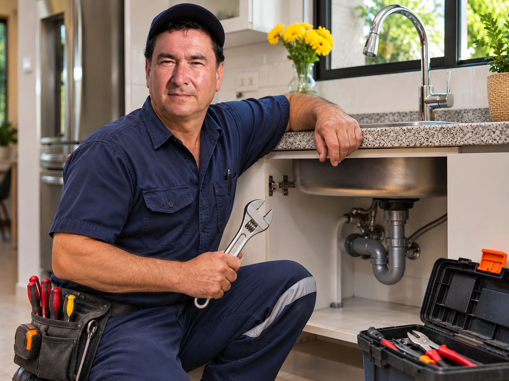
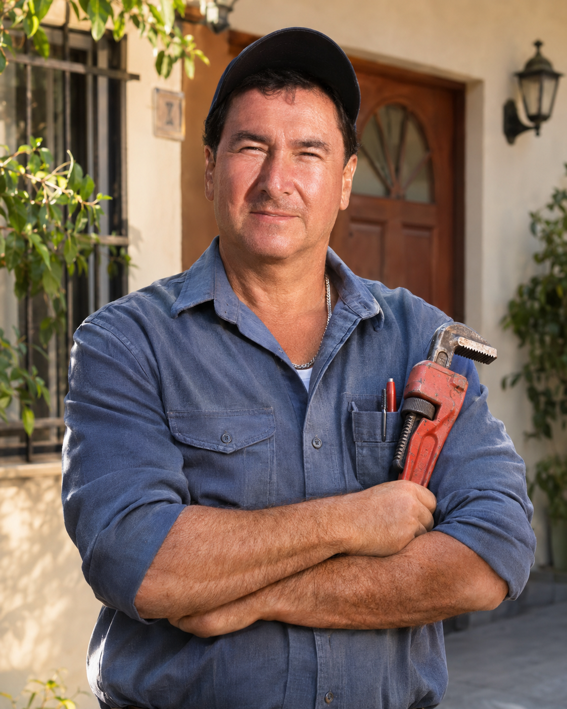

Filtraciones y goteras
Revisión y reparación de pérdidas de agua en llaves, cañerías y conexiones.
Hola, soy Don Pablo Videla. Te ayudo con problemas de gasfitería en tu hogar, con atención directa, trato cercano y trabajo a domicilio.

Desde una llave que gotea hasta un desagüe tapado. Cuéntame qué ocurre y revisamos cómo solucionarlo.
Revisión y reparación de pérdidas de agua en llaves, cañerías y conexiones.
Problemas de desagüe en lavaplatos, lavamanos y otras instalaciones.
Cambio y reparación de llaves, grifos y conexiones de agua.
Revisión de WC, estanques, lavamanos y problemas comunes del baño.
Revisión de uniones, mangueras flexibles y componentes de la instalación.
Mándame una foto o explícamelo por WhatsApp. Te diré si puedo ayudarte.
* Los servicios específicos, cobertura, valor de visita y disponibilidad se confirman directamente con Don Pablo. Trabajos en instalaciones de gas requieren un instalador autorizado SEC.

Soy Pablo Videla y ofrezco servicios de gasfitería a domicilio en Santiago de Chile.
Me gusta que las personas puedan contactarme directamente, contarme su problema y encontrar una solución práctica para su hogar.
Cuéntame qué pasa en tu casa y conversemos sobre cómo ayudarte.
Cuéntame por WhatsApp qué problema tienes y en qué comuna estás.
Si puedes, envía una imagen o video corto para conocer mejor el problema.
Confirmamos si puedo atenderte, el sector y los detalles del servicio.
¿No sabes si llego a tu comuna? Escríbeme y lo confirmamos.
Si necesitas más información, también puedes llamarme directamente.
☎ +56 9 8184 1300La cobertura depende del sector y la disponibilidad del día. Escríbeme indicando tu comuna para confirmarla.
El valor depende del tipo de problema, la ubicación y el trabajo necesario. Consulta previamente el costo de visita y presupuesto.
¡Sí! Puedes adjuntar fotos o un video por WhatsApp para explicar mejor lo que sucede.
Consúltame por teléfono o WhatsApp para confirmar disponibilidad. No hay una atención 24/7 garantizada.
No dejes que una pequeña filtración se convierta en un gran problema. Escríbeme y vemos cómo ayudarte.